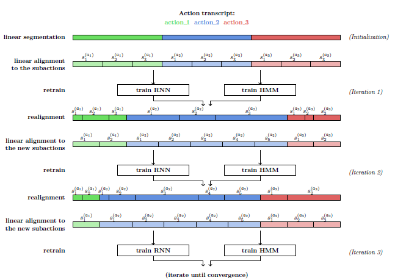

Weakly Supervised Action Learning with RNN based Fine-to-coarse ModelingA. Richard, H. Kuehne, J. Gall  AbstractWe present an approach for weakly supervised learning of human actions. Given a set of videos and an ordered list of the occurring actions, the goal is to infer start and end frames of the related action classes within the video and to train the respective action classifiers without any need for hand labeled frame boundaries. To address this task, we propose a combination of a discriminative representation of subactions, modeled by a recurrent neural network, and a coarse probabilistic model to allow for a temporal alignment and inference over long sequences. While this system alone already generates good results, we show that the performance can be further improved by approximating the number of subactions to the characteristics of the different action classes. To this end, we adapt the number of subaction classes by iterating realignment and reestimation during training. The proposed system is evaluated on two benchmark datasets, the Breakfast and the Hollywood extended dataset, showing a competitive performance on various weak learning tasks such as temporal action segmentation and action alignment. CodeWill be available soon under https://github.com/alexanderrichard/weakly_sup_action_learning . If you want a notification, please contact kuehne [at] iai.uni-bonn.de . |